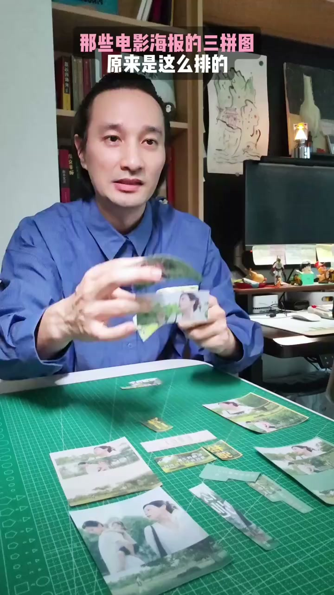
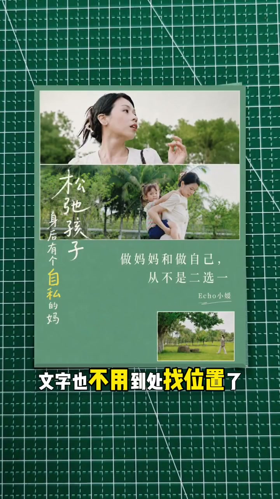
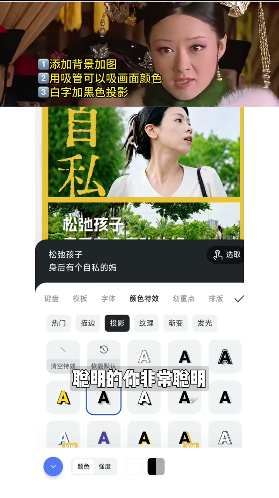

内容要点
三拼封面不必靠更换素材解决问题。视频通过实物拼贴和手机排版示例，说明先划分画面区域，再安排图片、文字与视觉重点；在保留三张照片的前提下，也能做出更清爽或更具海报感的版面。
先用大小关系建立主次
开头以三张照片加文字后显得别扭为例，提出不换图、先把文字放大的做法。随后通过调整三张图片的大小关系，强调同一组素材只要有明确的主次和位置安排，画面就会更有秩序。

[00:03] 用纸质照片和文字条演示三拼封面的构成及主次调整。
Using printed photos and text strips to demo a triptych cover's layout and hierarchy.
给文字预留独立空间
如果希望版面更清爽，视频建议把图片推向角落，并留出专门的空白区域承载文字。这样既能减轻拥挤感，也不必在图片之间反复寻找文字位置。若要更接近完整海报的效果，则可拉开图文区域：上方放画面，下方用于营造氛围。核心是先用网格分清图片区、文字区，以及观者最先看到的内容。

[00:23] 将照片与文字分区放置，用留白减少画面拥挤。
Separate photos and text into zones, using negative space to ease crowding.
用背景、字体和颜色统一画面
接着进入手机端操作示例：先选用简单的黄色背景，再调整图片的位置和大小；选择字体后，用吸管从画面中取色，使文字颜色与背景呼应。对于白色文字不够清晰的问题，视频展示了添加黑色投影的处理，并把关键词单独提出，增强阅读层级。

[00:52] 通过取色和黑色投影提升文字与图片的协调性和可读性。
Using color-picking and black shadows to improve text-image harmony and readability.
三拼封面的判断标准
结尾重申，三拼封面不是把三张图简单叠在一起。开始排版前，应先用网格明确图片区和文字区，并决定视觉焦点的先后顺序；视频称已准备四种图文排版卡，可在下次制作封面时直接使用。
总结
不换素材也可以改善封面：先决定图放哪里、字放哪里、谁先被看见，再用背景、取色和投影统一版面。